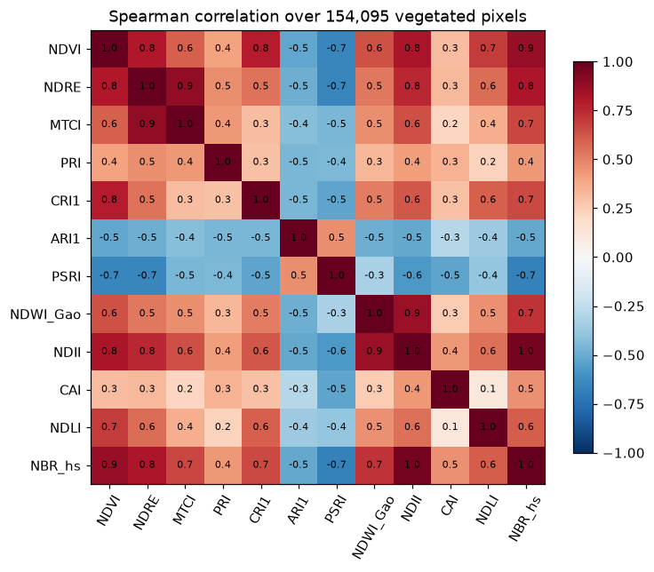
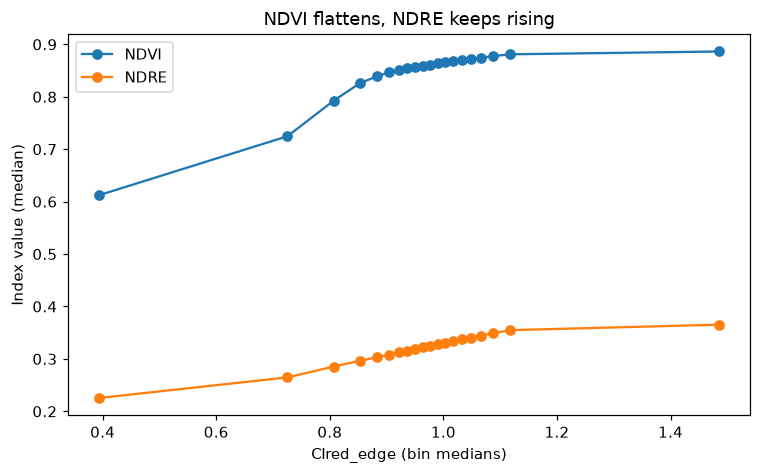
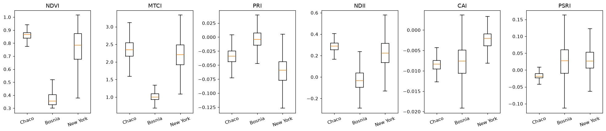
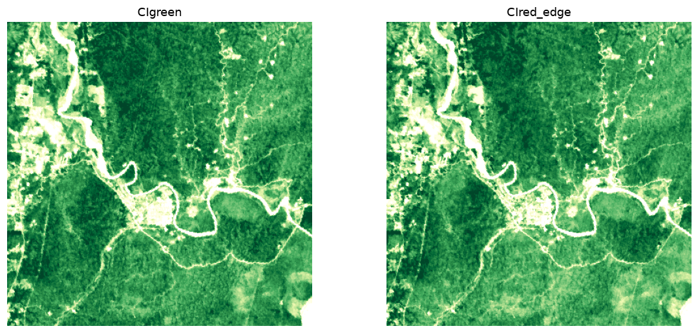

Narrow bands let an index target one absorption feature instead of a whole spectral region: chlorophyll on the red edge, carotenoids and anthocyanins in the green, the xanthophyll cycle at 531 nm, leaf water at 970, 1200 and 1650 nm, and cellulose and lignin in the SWIR. This notebook uses the narrowband index catalogue of geolattice.rsense.hyperspectral on Tanager scenes from three seasons and climates, maps the red edge position, shows why red edge indices keep working where NDVI saturates, and adds a custom index.
Overview
What a leaf spectrum records
Region
Main absorbers
Typical indices
400 to 500 nm
Chlorophyll a and b, carotenoids
SIPI, CRI
500 to 600 nm
Carotenoids, anthocyanins; xanthophyll cycle at 531 nm
PRI, CRI1, ARI1
650 to 690 nm
Chlorophyll (red absorption)
NDVI, MCARI, TCARI
690 to 750 nm
Red edge: slope set by chlorophyll content and canopy structure
NDRE, MTCI, CIred_edge, red edge position
750 to 1300 nm
Leaf structure and canopy LAI (scattering); weak water bands at 970 and 1200 nm
NDVI, MTVI2, WBI, NDWI (Gao)
1300 to 2500 nm
Leaf water; dry matter (cellulose, lignin, protein) near 1730, 2100 and 2300 nm
NDII, MSI, CAI, NDLI, NDNI
Why narrow bands
Broadband NDVI saturates once the canopy closes (LAI above about 3): red reflectance is near zero and NIR is high, so further increases in chlorophyll or leaf area barely change the ratio. Indices built on the red edge, where absorption is weaker, keep responding to chlorophyll at high biomass. Narrow green bands make pigment and photosynthetic efficiency indices possible (PRI tracks the de-epoxidation of xanthophylls under excess light), and narrow SWIR bands separate leaf water from dry matter, the basis of drought stress, fuel moisture and crop residue mapping.
The red edge position
The wavelength of the steepest slope between about 680 and 760 nm, the red edge position (REP), moves to longer wavelengths as chlorophyll increases (a few nm per 10 µg cm⁻²) and to shorter wavelengths under stress or senescence. It is estimated from the maximum of the first derivative or with the four point linear interpolation of Guyot and Baret (1988).
Caveats
Indices respond to everything that changes reflectance at their bands: soil background, canopy structure, view and sun angles, illumination and atmospheric residuals. They are fast and robust proxies, but quantitative retrieval (notebook 09_05_05) needs models and field data.
Narrowband Indices with GeoLattice
hs.index(cube, name) computes an index from the bands nearest to its wavelengths (within a tolerance), so the same name works for Tanager, EMIT, PRISMA, EnMAP or AVIRIS cubes. hs.list_indices and hs.available_indices list the catalogue, hs.register_index adds new indices and hs.red_edge_position maps the REP.
Learning objectives
Browse the index catalogue and check which indices a sensor supports.
Compute and map pigment, red edge, water and dry matter indices.
Measure the redundancy between indices.
Map the red edge position with two methods.
Show NDVI saturation and the advantage of red edge indices in dense canopies.
Compare vegetation condition between scenes and seasons.
Register a custom index.
Data
Scene
Date
Landscape
Tanager agriculture
24 February 2025
Gran Chaco forest, fields and a river on the Bolivia and Argentina border (wet season)
Tanager natural lands
21 February 2025
Hills of Bosnia and Herzegovina (winter)
Tanager ROCX 2025
19 September 2025
Farmland, forest and suburbs near Rochester, New York (late summer)
Contents
Setup
The index catalogue
Index maps
How many independent indices?
Red edge position
NDVI saturation and red edge indices
Three scenes, three seasons
A custom index
Summary and exercises
Setup
Installation. This notebook needs installation option 5 (core, spatial analysis, spatial statistics, geostatistics and remote sensing): pip install "geolattice[remote-sensing]". See “Installation options” in the GeoLattice README.
Code
import warnings # warning controlwarnings.filterwarnings("ignore") # hide routine library warningsfrom pathlib import Path # file pathsimport numpy as np # arraysimport pandas as pd # tablesimport matplotlib.pyplot as plt # figuresimport geolattice # GeoLatticefrom geolattice.rsense import hyperspectral as hs # hyperspectral cubes, readers and toolsplt.rcParams.update({"figure.dpi": 110}) # figure resolutionDATA = Path("../../../../Data/08_remote_sensing/08_05_HyperSpectral") # data folder next to this notebookTANAGER = DATA /"Tanger"# Planet Tanager sample scenesOUT = Path("outputs") # results written by this notebookOUT.mkdir(exist_ok=True) # create it if neededdef tanager_file(category, product="sr"):"""Path of a Tanager product (sr or radiance) for a scene category folder."""returnnext((TANAGER / category).glob(f"*/*_ortho_{product}_hdf5.h5"))print("GeoLattice", geolattice.__version__) # library version used for this notebook
GeoLattice 0.3.49
The index catalogue
Code
cat = pd.DataFrame([{"index": k, "wavelengths (nm)": v.wavelengths, "description": v.description}for k, v in hs.indices.INDICES.items()]).set_index("index")probe = hs.read_tanager(tanager_file("agriculture"), window=(slice(0, 1), slice(0, 1))) # Tanager bandsohs_wl = np.array(hs.io.OHS_WAVELENGTHS) # OHS band centrescat["Tanager"] = [k in hs.available_indices(probe) for k in cat.index] # every index has bandscat["OHS"] = [bool(np.all(np.min(np.abs(np.subtract.outer(v, ohs_wl)), 1) <=15))for v in cat["wavelengths (nm)"]] # OHS only reaches 940 nmprint(len(cat), "indices |", int(cat["Tanager"].sum()), "available for Tanager |", int(cat["OHS"].sum()), "for OHS")cat
32 indices | 32 available for Tanager | 19 for OHS
wavelengths (nm)
description
Tanager
OHS
index
NDVI
(800.0, 670.0)
Narrowband NDVI
True
True
EVI
(800.0, 670.0, 470.0)
Enhanced vegetation index
True
True
OSAVI
(800.0, 670.0)
Optimized soil-adjusted VI
True
True
MTVI2
(800.0, 670.0, 550.0)
Modified triangular VI 2 (LAI)
True
True
NDRE
(790.0, 720.0)
Normalized difference red edge
True
True
mND705
(750.0, 705.0, 445.0)
Modified red-edge ND
True
False
CIred_edge
(800.0, 720.0)
Red-edge chlorophyll index
True
True
MTCI
(754.0, 709.0, 681.0)
MERIS terrestrial chlorophyll
True
True
MCARI
(700.0, 670.0, 550.0)
Modified chlorophyll absorption ratio
True
True
TCARI
(700.0, 670.0, 550.0)
Transformed CARI
True
True
TCARI_OSAVI
(700.0, 670.0, 550.0, 800.0)
TCARI/OSAVI (chlorophyll, LAI-insensitive)
True
True
REP_linear
(670.0, 700.0, 740.0, 780.0)
Red-edge position, 4-point linear interpolatio...
True
True
PRI
(531.0, 570.0)
Photochemical reflectance index
True
True
CCI
(531.0, 645.0)
Chlorophyll/carotenoid index (MODIS-like)
True
True
SIPI
(800.0, 445.0, 680.0)
Structure-insensitive pigment index
True
False
PSRI
(680.0, 500.0, 750.0)
Plant senescence reflectance
True
True
CRI1
(510.0, 550.0)
Carotenoid reflectance index 1
True
True
ARI1
(550.0, 700.0)
Anthocyanin reflectance index 1
True
True
WBI
(900.0, 970.0)
Water band index
True
False
NDWI_Gao
(860.0, 1240.0)
Leaf water (Gao 1996)
True
False
NDII
(820.0, 1650.0)
Normalized difference infrared index
True
False
MSI
(1600.0, 820.0)
Moisture stress index
True
False
CAI
(2000.0, 2100.0, 2200.0)
Cellulose absorption index
True
False
NDLI
(1754.0, 1680.0)
Normalized difference lignin index
True
False
NDNI
(1510.0, 1680.0)
Normalized difference nitrogen index
True
False
ClayAlOH
(2165.0, 2205.0, 2260.0)
Al-OH (clay, ~2200 nm) relative depth
True
False
Carbonate
(2295.0, 2335.0, 2385.0)
Carbonate (~2335 nm) relative depth
True
False
FerricIron
(750.0, 560.0)
Ferric iron (red/green slope)
True
True
FerrousIron
(1650.0, 1000.0)
Ferrous iron (~1000 nm absorption)
True
False
NBR_hs
(860.0, 2200.0)
Normalized burn ratio
True
False
PhycocyaninRatio
(709.0, 620.0)
Phycocyanin (cyanobacteria) ratio
True
True
Chl_NDCI
(708.0, 665.0)
Normalized difference chlorophyll index (water)
True
True
Index maps
A 400 by 400 pixel window (12 by 12 km) of the agriculture scene covers forest, fields, the river and a town.
NDVI, NDRE and MTCI all outline the forest, but with different contrast inside it: NDVI is almost uniform over the closed canopy, while the red edge indices still vary. The water indices (NDWI and NDII) are high wherever leaves are wet and dense, and the town and bare ground stand out as low. The cellulose absorption index (CAI) is nearly uniform over this green wet season landscape and drops only over the river and wet ground, since there is little dry plant matter to detect. PRI, CRI1, ARI1 and PSRI show finer patterns tied to pigments and illumination, and all of them mark the sediment laden river strongly.
How many independent indices?
Code
veg = (idx["NDVI"] >0.5).values # vegetated pixelsT = pd.DataFrame({n: idx[n].values[veg] for n in NAMES}).dropna() # one row per pixelcorr = T.corr(method="spearman") # rank correlation between indicesfig, ax = plt.subplots(figsize=(7.5, 6.5))im = ax.imshow(corr, cmap="RdBu_r", vmin=-1, vmax=1)ax.set_xticks(range(len(NAMES)), NAMES, rotation=60); ax.set_yticks(range(len(NAMES)), NAMES)for i inrange(len(NAMES)):for j inrange(len(NAMES)): ax.text(j, i, f"{corr.iat[i, j]:.1f}", ha="center", va="center", fontsize=7)ax.set_title(f"Spearman correlation over {len(T):,} vegetated pixels")plt.colorbar(im, ax=ax, shrink=0.8)plt.show()

Several groups emerge. NDVI, NDII and the burn ratio correlate at 0.8 to 1.0 in this canopy, because greener canopies here are also wetter; the red edge indices NDRE and MTCI form a tight pair (0.9); the anthocyanin and senescence indices (ARI1, PSRI) run against all the greenness indices; PRI, CAI and NDLI are only weakly related to the rest and carry the most independent information. In a model it is better to choose one index per group, or to use the full spectrum (notebook 09_05_05), than to stack a dozen indices that measure the same thing.
derivative linear
count 154095.0 154095.0
mean 721.5 721.4
std 1.7 0.8
min 701.1 714.7
25% 720.6 721.0
50% 721.5 721.4
75% 722.4 721.9
max 740.5 727.3
Both methods place the red edge of this canopy near 721 nm, and the spread is small: a few nm across the whole window, close to the 5 nm band spacing. In such a narrow range the two methods agree only moderately (r about 0.64): the derivative method follows the sampled spectrum and is noisier, the linear method assumes a straight red edge between 700 and 740 nm and compresses the range. MTCI, which uses three bands on the red edge, is related to the REP to a similar degree (r about 0.62). Use one method consistently when comparing dates or sites, and expect the REP to be most useful where chlorophyll varies more than in this uniformly green forest.
NDVI saturation and red edge indices
If NDVI saturates, it should flatten while a red edge index keeps rising as canopy greenness increases. A plot against the red edge chlorophyll index (CIred_edge, a ratio that does not saturate) shows it.
Code
ci = hs.index(agri, "CIred_edge").values # R800 / R720 - 1v = veg & np.isfinite(ci)bins = np.quantile(ci[v], np.linspace(0, 1, 21)) # 20 equal-count bins of CIred_edgemid =0.5* (bins[1:] + bins[:-1])med = {n: [np.nanmedian(idx[n].values[v][(ci[v] >= a) & (ci[v] < b)]) for a, b inzip(bins[:-1], bins[1:])]for n in ["NDVI", "NDRE"]}fig, ax = plt.subplots(figsize=(8, 4.5))for n, m in med.items(): ax.plot(mid, m, "o-", label=n)ax.set(xlabel="CIred_edge (bin medians)", ylabel="Index value (median)", title="NDVI flattens, NDRE keeps rising")ax.legend()plt.show()slope = {n: np.polyfit(mid[-8:], np.array(m)[-8:], 1)[0] / np.polyfit(mid[:8], np.array(m)[:8], 1)[0] for n, m in med.items()}print("slope in the densest 8 bins relative to the sparsest 8 bins:", {k: round(v, 2) for k, v in slope.items()})

slope in the densest 8 bins relative to the sparsest 8 bins: {'NDVI': np.float64(0.08), 'NDRE': np.float64(0.38)}
Over sparse vegetation both indices rise with CIred_edge; in the densest canopy NDVI’s slope drops to a small fraction of its initial value, while NDRE keeps a larger share of its sensitivity (compare the two slope ratios printed above). This is the practical reason to use red edge indices for nitrogen and chlorophyll in closed crops and forests.
Three scenes, three seasons
Vegetation from the Chaco in the wet season, Bosnian hills in winter and New York farmland and forest in late summer. Each scene is read with only the bands the indices need (14 bands), and pixels with NDVI above 0.3 are compared; at most 20,000 pixels are sampled per scene.
Code
COMPARE = ["NDVI", "MTCI", "PRI", "NDII", "CAI", "PSRI"]need =sorted({float(w) for n in COMPARE for w in hs.indices.INDICES[n].wavelengths}) # wavelengths usedbands =sorted({hs.band_index(probe, w) for w in need}) # nearest Tanager bandsrows = []for cat_name, label in [("agriculture", "Chaco, Feb (wet season)"), ("natural-lands", "Bosnia, Feb (winter)"), ("ROCX2025", "New York, Sep (late summer)")]: c = hs.read_tanager(tanager_file(cat_name), bands=bands) # whole scene, needed bands only d = hs.index(c, COMPARE).to_dataframe()[COMPARE].dropna() # one row per pixel d = d[d["NDVI"] >0.3].sample(20000, random_state=0) if (d["NDVI"] >0.3).sum() >20000else d[d["NDVI"] >0.3] rows.append(d.assign(scene=label))print(f"{label}: {len(bands)} bands read, {(d['NDVI'] >0.3).sum():,} vegetated pixels sampled")comp = pd.concat(rows)fig, axes = plt.subplots(1, len(COMPARE), figsize=(18, 4))for ax, n inzip(axes, COMPARE): ax.boxplot([comp.loc[comp.scene == s, n] for s in comp.scene.unique()], showfliers=False) ax.set_xticks([1, 2, 3], ["Chaco", "Bosnia", "New York"], rotation=20); ax.set_title(n)plt.tight_layout()plt.show()comp.groupby("scene")[COMPARE].median().round(3)
Chaco, Feb (wet season): 14 bands read, 20,000 vegetated pixels sampled
Bosnia, Feb (winter): 14 bands read, 20,000 vegetated pixels sampled
New York, Sep (late summer): 14 bands read, 20,000 vegetated pixels sampled

NDVI
MTCI
PRI
NDII
CAI
PSRI
scene
Bosnia, Feb (winter)
0.355
1.003
-0.004
-0.032
-0.008
0.028
Chaco, Feb (wet season)
0.865
2.342
-0.034
0.289
-0.008
-0.019
New York, Sep (late summer)
0.784
2.207
-0.059
0.223
-0.002
0.026
The table of medians summarises the boxplots. The Chaco wet season canopy is the greenest and wettest (highest NDVI, MTCI and NDII, lowest PSRI). The Bosnian winter scene’s “vegetated” pixels barely pass the NDVI threshold (median 0.36), with low MTCI, negative NDII and a higher senescence index: dormant grass, leafless deciduous forest and conifers rather than green leaves. The late summer New York scene is almost as green as the Chaco but has the highest CAI (dry plant matter, as in ripening or harvested fields) and a senescence index similar to Bosnia’s. PRI differs too, but it also depends on sun angle and illumination, so its scene medians should not be read as stress alone. Indices make such contrasts between places and seasons quick to quantify.
A custom index
hs.register_index adds an index by name, wavelengths and formula; the formula receives one reflectance array per wavelength. Here the green chlorophyll index (Gitelson et al. 2003), CIgreen = R800 / R550 - 1, is added and compared with CIred_edge.
Code
hs.register_index("CIgreen", [800, 550], lambda r800, r550: r800 / r550 -1, description="Green chlorophyll index", reference="Gitelson et al. 2003")cig = hs.index(agri, "CIgreen") # works like any built in indexboth = np.isfinite(cig.values) & vprint("CIgreen in catalogue:", "CIgreen"in hs.list_indices(),"| Spearman r with CIred_edge:", round(pd.Series(cig.values[both]).corr(pd.Series(ci[both]), method="spearman"), 3))fig, axes = plt.subplots(1, 2, figsize=(11, 4.8))for ax, (n, a) inzip(axes, [("CIgreen", cig.values), ("CIred_edge", ci)]): ax.imshow(np.where(veg, a, np.nan), cmap="YlGn", vmin=np.nanpercentile(a[veg], 2), vmax=np.nanpercentile(a[veg], 98)) ax.set_title(n); ax.axis("off")plt.tight_layout()plt.show()
CIgreen in catalogue: True | Spearman r with CIred_edge: 0.922

Summary and exercises
Key points
Narrowband indices target single absorption features: pigments, red edge, leaf water and dry matter. Defined by wavelength, they run on any imaging spectrometer that covers the bands.
Many indices are strongly correlated; choose one per group or use full spectrum models.
The red edge position and red edge indices respond to chlorophyll where NDVI saturates.
Index distributions separate green, dormant and senescent vegetation between places and seasons.
Custom indices are one line with hs.register_index.